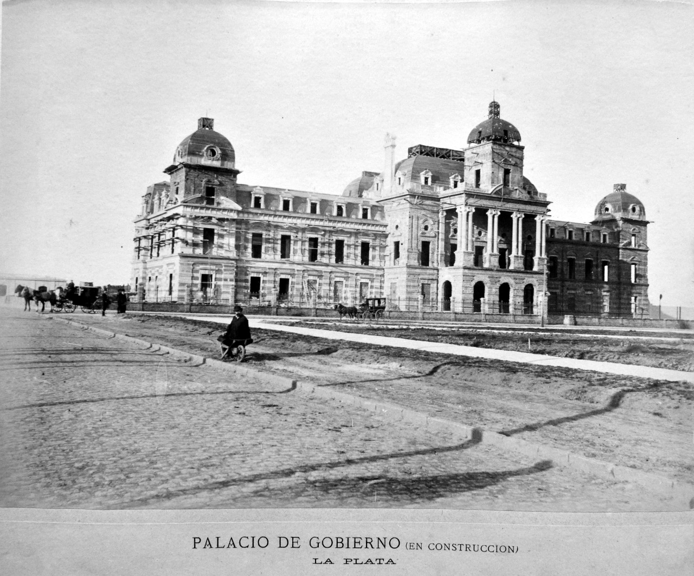

Para el año 1882, el Gobernador de la provincia de Buenos Aires, Dardo Rocha, convocó a un viejo conocido de la Guerra del Paraguay, Tomás Bradley Sutton,
el fotógrafo que se encargaría de tomar la fotografía el 19 de noviembre cuando se colocara la piedra fundacional de la nueva Ciudad Capital en la plaza principal.
Fue así que Bradley no solo tomó aquella fotografía tan emblemática, que luego se convertiría en cuadro, sino que también fotografió los primeros 4 años de crecimiento urbano
de la ciudad, algo que no había ocurrido con ninguna otra ciudad del mundo. El resultado de su trabajo se compiló y publicó en el álbum “Vistas de La Plata”.
Desde fines de 1882, los primeros habitantes, legiones de albañiles italianos, comenzaron a ocuparse de las obras fundacionales.
En junio de 1883 se empieza a construir el Palacio Municipal de La Plata. Un año más tarde, en 1884, los poderes públicos de la Provincia son instalados definitivamente; impulsando
la llegada masiva de empleados públicos entonando un singular cántico que resumía sus particulares expectativas sobre la vida en la naciente ciudad y el más generalizado optimismo
dispendioso de la época.

Mientras la población se instalaba rápidamente gracias a un permiso municipal para la construcción de casillas de madera prefabricadas durante un plazo de una cierta cantidad de años; avanzaban rápidamente las obras de los principales edificios públicos, que estaban terminados en menos de cinco años. La Casa de Gobierno, los Palacios Municipal, de Justicia y de la Legislatura, el Banco de la Provincia y el Hipotecario de la Provincia, la Residencia del Gobernador y algunos Ministerios fueron las primeras grandes construcciones habilitadas en la ciudad entre 1885 y 1886. A tan solo cinco años de haberse fundado la ciudad, se fundó el Club de Gimnasia y Esgrima La Plata. Fundado el 3 de junio de 1887, comenzó sus actividades deportivas con los dos deportes que forman su nombre; la gimnasia y la esgrima. El 20 y 24 de agosto de 1887 fueron inaugurados los servicios de telegrafía y telefonía de la ciudad. Las líneas telefónicas habilitadas posibilitaban las comunicaciones con las ciudades de Buenos Aires y Ensenada. En 1887 también se inició la construcción del viejo Teatro Argentino a cargo del arquitecto italiano Leopoldo Rocchi. Su construcción demandó 5 años, aunque se inauguró en 19 de noviembre de 1890 con la obra Otello de Giuseppe Verdi. La ciudad fue premiada en la Exposición Universal de París en 1889, evento en el cual a la nueva urbe se la premia con dos medallas doradas en las categorías «Ciudad del Futuro» y «Mejor realización construida».